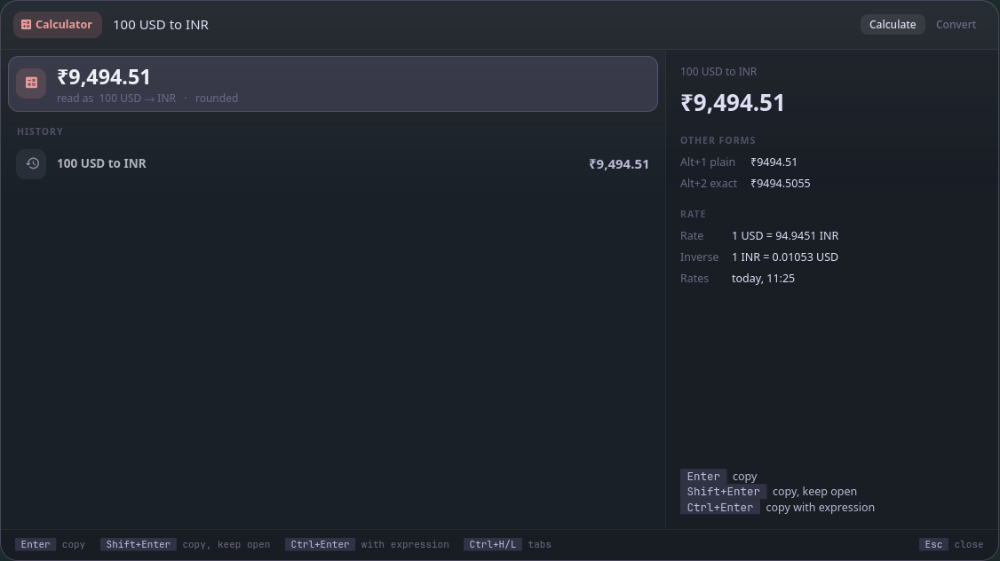
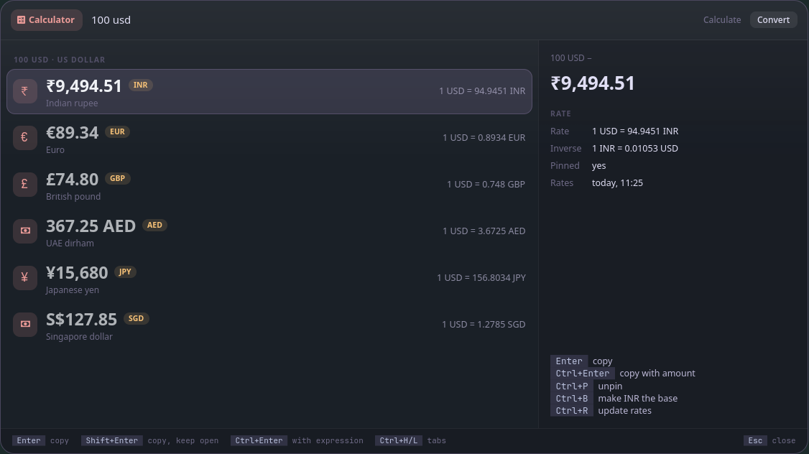

Ganit (गणित) is Sanskrit for "mathematics": the sums, conversions and currencies, answered as you type.
ganit is the calculator and converter for Vyom: one keyboard-driven panel that opens instantly, with live data, a preview and a key for everything. It runs on any compositor with the layer-shell protocol (sway, Hyprland, river, niri, Wayfire, labwc…). In Vayu, the desktop it was built for, it replaces wofi-calc.sh (a prompt, then a second wofi for the result).
#Features
Calculate (vyom ganit):
- Answers as you type, through qalc (libqalculate): arithmetic, functions, percentages (
18% of 3897,3897 + 18%), units (5 ft 11 in to cm), currency (100 USD to INR), dates, bases. - One big answer that says how it was read: "read as (18 × percent) × 3897", so a misread is obvious at once. Digits are grouped and money is rounded to 2 decimals (₹9,494.51).
- The other forms in the side pane: plain (no separators, for pasting), exact (a fraction, qalc's full digits), hex, binary, scientific;
Alt+1..4copies one. - Half-typed input doesn't jump around: while the box ends in an operator (
2 +), the last answer stays, dimmed, "waiting for more…". - Opening it shows your recent calculations and examples of what it can do;
Enteron one puts it in the box. - A history of the last 50, with the answers on the right.
Shift+Entercopies and keeps the panel open.
Convert (vyom ganit convert, or Ctrl+Tab from Calculate):

- An amount once, every currency you care about:
100 usd,€50,2500(your home currency) shows the amount in each pinned currency, with the rate. Add a name or code to see others (100 usd cad,100 usd franc). - An empty box is a rate board: what one of each pinned currency is worth at home.
Ctrl+Ppins or unpins a currency;Ctrl+Bmakes the selected one the base (100 USD → ₹9,494.51 → convert 9494.51 INR).- Units the same way:
5 ft,30 c,10 gb,100 kmhshow the related units (length, mass, temperature, volume, data, speed, area, time). - Exchange rates you can trust: their age is always shown, they update once a day in the background (not again for an hour if offline), and
Ctrl+Rupdates them now; rates older than two days get a warning.
Both: keyboard first (every action has a key, shown in the footer and the side pane), and the panel never freezes: qalc runs in the background.
#Install
#Requirements
- Vyom 0.3 or newer (Python 3.11+, PyGObject, GTK 4, gtk4-layer-shell, a Nerd Font)
qalc
#Install
git clone https://github.com/Theyashsawarkar/ganit ~/.local/share/vyom/plugins/ganit
vyom reload # pick it up (or log out and in)
vyom ganit # open it; run it again to closeGive it a key in your compositor, e.g. sway:
bindsym $mod+<key> exec vyom ganit#Update and uninstall
git -C ~/.local/share/vyom/plugins/ganit pull && vyom reload # update
rm -rf ~/.local/share/vyom/plugins/ganit && vyom reload # uninstall#Usage
Open it with vyom ganit (or your key), or straight on Convert with vyom ganit convert. Type; the footer and the side pane show the keys for what's selected.
| Key | Action |
|---|---|
Enter | Copy the answer (on a history line or an example: put it in the box) |
Shift+Enter | Copy the answer and keep the panel open |
Ctrl+Enter | Copy the answer with its expression |
Alt+1..4 | Copy one of the answer's other forms (plain, exact, hex, binary) |
Ctrl+R | Update the exchange rates now |
Ctrl+P | Toggle the selected currency's pin (Convert tab) |
Ctrl+B | Set the selected currency as the base (Convert tab) |
Ctrl+Backspace | Clear the history (with an empty box) |
Esc | Close the panel |
Every Vyom panel also has Up/Down (or Ctrl+K/Ctrl+J) to move, Page Up/Page Down to jump, Tab/Shift+Tab to switch to the next/previous tool, and Ctrl+Tab/Ctrl+Shift+Tab (or Ctrl+H/Ctrl+L) to switch tabs, or Ctrl with the number shown on a tab.
#Configuration
[plugin.ganit] in ~/.config/vyom/config.toml, all optional:
| Option | Default | What it does |
|---|---|---|
home | "INR" | Your currency: a bare number in Convert is in it, and the rate board is priced in it |
currencies | ["INR", "USD", "EUR", "GBP", "AED", "JPY", "SGD"] | The pinned currencies, until you pin or unpin one with Ctrl+P |
grouping | "intl" | Digit grouping: "intl" (1,234,567), "indian" (12,34,567) or "none" |
#Troubleshooting
- Nothing opens.
vyom listshows every installed tool, and why one is skipped (a missing requirement, or a Vyom that's too old). - Currency answers are old, or Convert says it has no rate. qalc keeps the rates in
~/.local/share/qalculate/; the side pane shows their age.Ctrl+Rupdates them (it needs the network); the footer says whether it worked. - It opened, then something failed. Look for a
Tracebackin the daemon's log,journalctl --user -u vyom -u vyom-daemon -b(without systemd:~/.local/state/vyom/daemon.log), and open an issue with it. - No blur or rounded corners. That's the compositor: on SwayFX, add
layer_effects "vyom" { blur enable; corner_radius 20; shadows enable }.
#The Vyom family
Each tool is its own repository, so you install only the ones you want:
| Tool | What it does | |
|---|---|---|
| dvara | द्वार, gateway | The app launcher |
| ganit (this one) | गणित, mathematics | The calculator and converter |
| smriti | स्मृति, memory | Clipboard history |
| bhava | भाव, feeling, emotion | The emoji picker |
| tarang | तरंग, wave | Wi‑Fi and the hotspot |
| setu | सेतु, bridge | Bluetooth |
| doot | दूत, messenger | Your phone, through KDE Connect |
| patra | पात्र, vessel | Docker containers |
| suchana | सूचना, notice | Notifications |
| raga | राग, melody | YouTube music and video |
| mudra | मुद्रा, gesture | Keybinding search |
| urja | ऊर्जा, energy | The battery at a glance |
| vishram | विश्राम, rest | The power menu |
| kendra | केन्द्र, centre | Quick settings |
#Contributing
Bug reports, ideas and pull requests are welcome: see CONTRIBUTING.md for the development setup and the few rules every tool follows, and CHANGELOG.md for what changed in each release. Please report security issues privately (SECURITY.md).
#License
MIT.